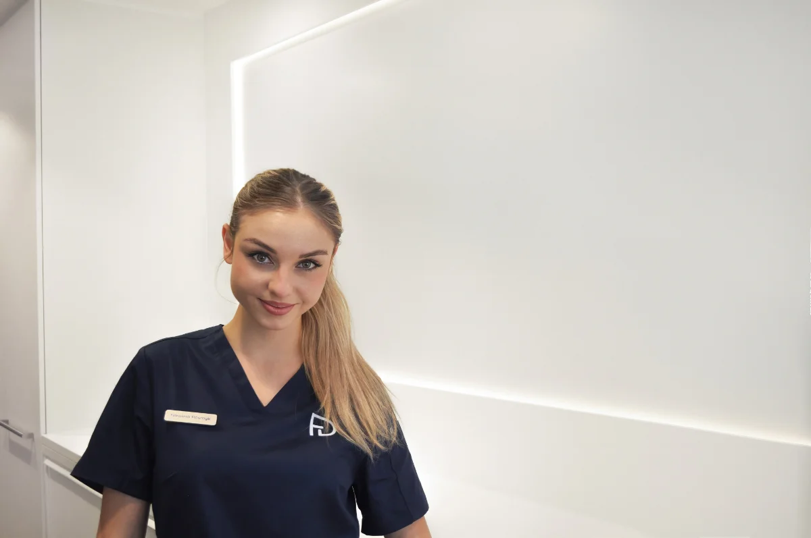
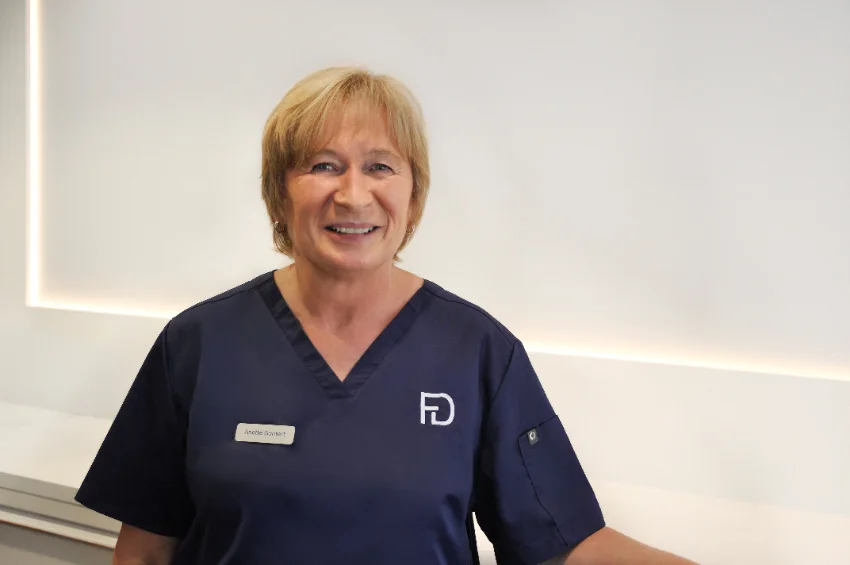
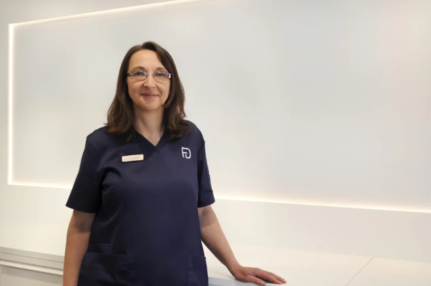
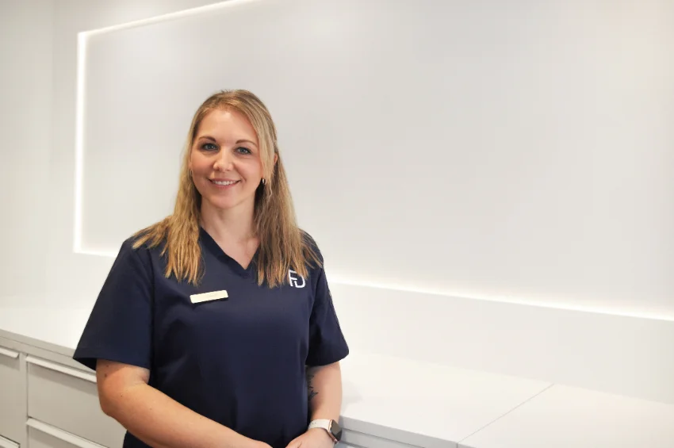
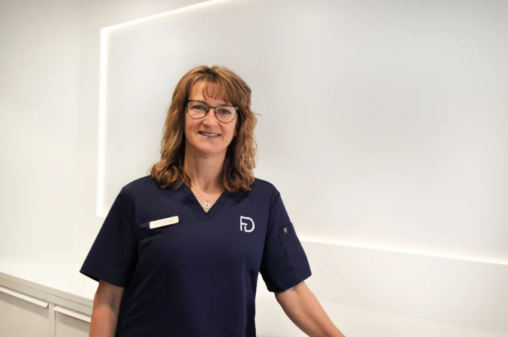
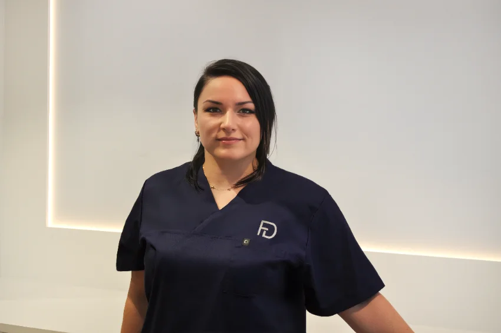

Die Menschen hinter FRYDENT.
Wir glauben daran, dass gute Zahnmedizin Zeit braucht. Zeit zum Zuhören. Zeit zum Erklären.
Zeit für Persönlichkeit. Regional verwurzelt im wunderschönen Schwarzwald und fachlich auf dem neuesten Stand.
Tatiana Frydrych & Max Frydrych
Bekannte Gesichter, gute Laune.
Hinter jeder Behandlung steht ein eingespieltes Team, das sich seit Jahren kennt und aufeinander verlassen kann. Einige unserer Mitarbeiterinnen sind seit über 40 Jahren Teil unserer Praxis: vertraute Gesichter, gewachsene Beziehungen und Wissen, das von Generation zu Generation weitergegeben wird.

Als Praxismanagerin behält Frau Posmyk den Überblick und sorgt dafür, dass in der Praxis alles reibungslos läuft. Oft ist sie die Erste, die Sie mit einem Lächeln begrüßt.
„Schön, dass Sie da sind!“

Frau Gantert ist unsere Allrounderin. Mit ihrer Erfahrung, ihrem Überblick und ihrem außergewöhnlichen Engagement findet sie für nahezu jede Herausforderung eine Lösung.
„Wir finden eine Lösung.“

Mit technischem Können, viel Erfahrung und großer Ruhe ist Frau Güntert eine unverzichtbare Stütze unseres Teams. Besonders im Bereich CEREC arbeitet sie mit großer Präzision und Sorgfalt.
„Präzision macht den Unterschied.“

Frau Horn sorgt mit großer Sorgfalt dafür, dass unsere hohen Hygienestandards jeden Tag zuverlässig umgesetzt werden. So können sich unsere Patientinnen und Patienten jederzeit sicher fühlen.
„Sicherheit beginnt im Detail.“

Mit ihrer ruhigen, herzlichen Art schenkt Frau Tröndle vielen Patientinnen und Patienten genau das, was sie vor einer Behandlung am meisten brauchen: Vertrauen und Gelassenheit.
„In Ruhe liegt oft die größte Stärke.“

Frau Pawlik sorgt jeden Tag mit großer Sorgfalt dafür, dass Sauberkeit und Ordnung unseren hohen Qualitätsansprüchen gerecht werden.
„Sauberkeit ist gelebte Wertschätzung.“
Bei uns sitzt kein Fall auf dem Stuhl, sondern ein Mensch. Was uns seit Generationen prägt.
100 Jahre Zahnmedizin an einem Ort, von Dr. Stritt bis FRYDENT. Vier Generationen, eine Adresse.
Helle Räume, moderne Ausstattung und eine Atmosphäre, in der man gern Platz nimmt.
Sprechzeiten
Außerhalb der Sprechzeiten: zahnärztlicher Notdienst 01805 911-620
Kontakt
Sie möchten einen Termin vereinbaren oder uns etwas mitteilen? Nutzen Sie ganz einfach unser Kontaktformular, oder noch einfacher: buchen Sie direkt online.